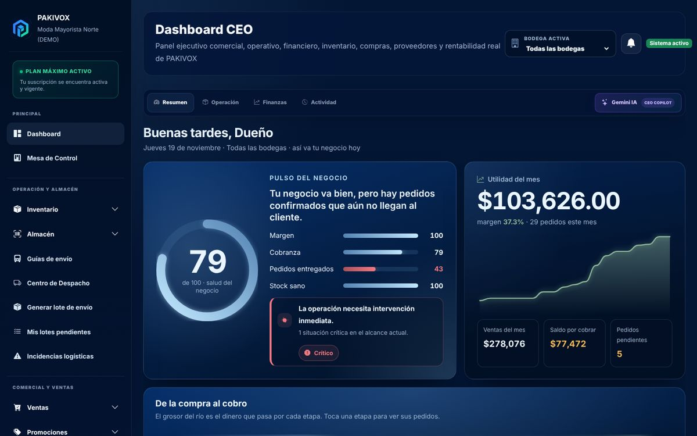
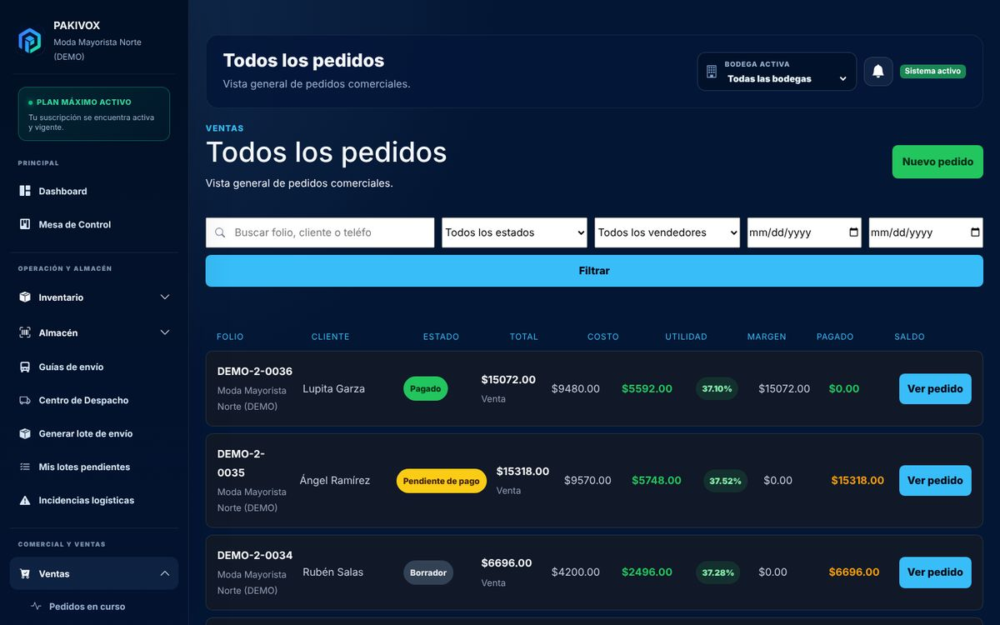
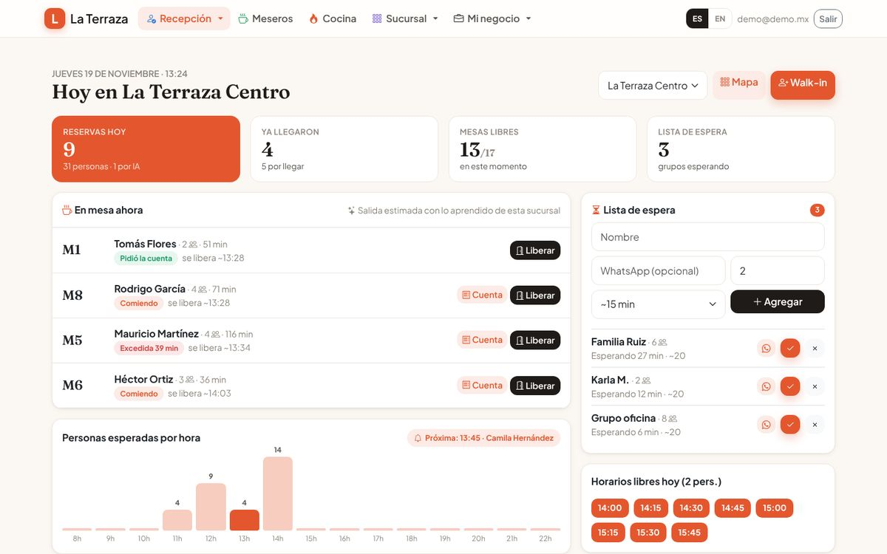
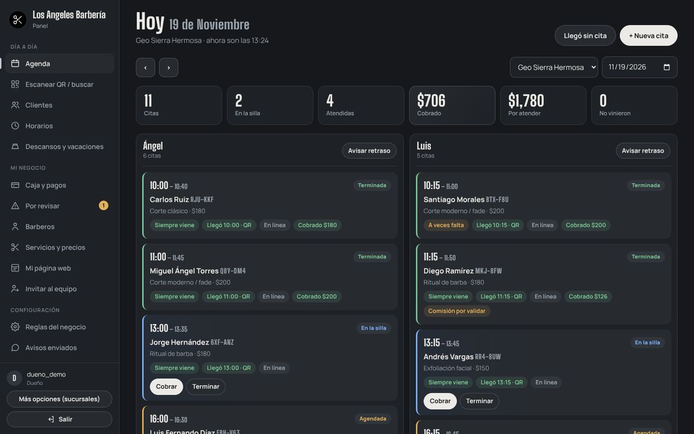
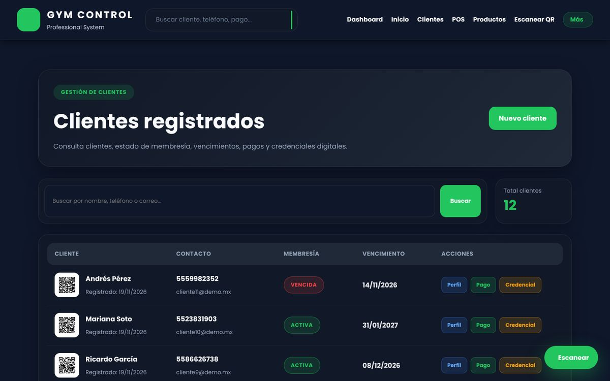

En desarrollo · punto de venta
PAKIVOX Verdulería
Punto de venta para Windows que funciona sin internet. Catálogo con unidades exactas por kilo, recepción y merma, movimientos de inventario que no se pueden alterar y caja.
Construyo con Python y Django de punta a punta: modelo de datos, pantallas, pruebas automatizadas y servidor en producción. Estos son los sistemas que he hecho, con sus pantallas reales.

Sistema de operación para mayoristas que venden por WhatsApp e internet. Lleva cada pedido desde el cobro hasta la entrega, con varias bodegas por empresa. Lo hice solo y está en línea en pakivox.com.
Ver código en GitHub
Reservaciones en línea para varios restaurantes y cadenas, cada uno con su marca, sucursales y datos aislados. Incluye recepción, lista de espera, punto de venta por mesa, pantalla de cocina y un asistente de IA.
Ver código en GitHub
Una sola instalación atiende a muchas barberías, cada una con sus sucursales, barberos, servicios y clientes. Cada barbería tiene su propia página con reserva en línea y un panel para el día a día.
Ver código en GitHub
Control de socios, membresías y acceso para un gimnasio. Cada cliente recibe una credencial con QR que se escanea en la entrada para validar si su membresía sigue vigente.
Ver código en GitHub
Punto de venta para Windows que funciona sin internet. Catálogo con unidades exactas por kilo, recepción y merma, movimientos de inventario que no se pueden alterar y caja.
Los ciudadanos reportan fugas, falta de agua o baja presión sobre un mapa, y el administrador asigna cada reporte a un trabajador de su zona.
La misma app de tareas diseñada en Figma para escritorio, tablet, celular, smartwatch y pantalla de auto, y construida en Angular con componentes.
Herramienta de terminal para respaldar y restaurar bases, monitorear y cerrar sesiones, y administrar usuarios y permisos en Debian.
Equipos y jugadores con altas, consultas, edición y bajas, ficha de plantilla por equipo y acceso solo para administradores.
Mi marca para ofrecer páginas y sistemas a la medida a negocios locales, como el de barberías.
Cada cambio grande lleva pruebas, respaldo y forma de revertirlo. No avanzo sin comprobar la fase anterior.
Antes de cambiar algo reviso cómo está construido. No reescribo lo que funciona sin una razón técnica.
Cada proceso tiene una explicación que el dueño entiende: qué controla, qué riesgo evita y de dónde sale cada número.
Diseño, desarrollo, despliegue y venta de un SaaS de operación para mayoristas.
Sistemas de reservaciones y páginas para restaurantes, barberías y gimnasios.
Universidad Tecnológica de Tecámac.
Busco proyectos y puestos de desarrollo con Django: inventario, logística, reservaciones o sistemas internos. Escríbeme por LinkedIn.